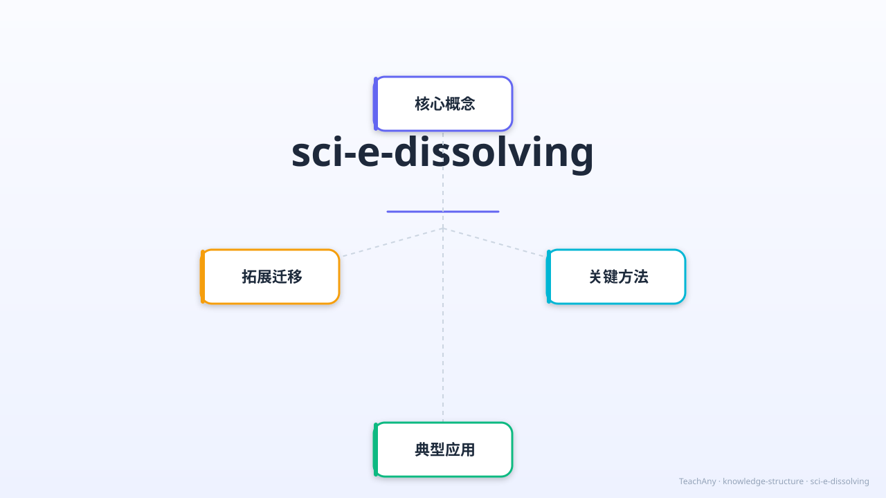

盐消失了吗？探索物质溶于水的奥秘，揭开溶解的科学面纱！

用 ABT 叙事框架激发好奇心
我们每天喝的水、用的盐、吃的糖，都是我们熟悉的物质。把一勺盐放进水里，搅拌几下，盐"消失了"——我们都以为这很普通。
但是，盐真的消失了吗？🤔 如果盐消失了，为什么盐水还是咸的？而沙子放进水里搅拌，却沉在杯底，没有"消失"？同样是固体，为什么反应不同？
因此，我们今天要探索"溶解"这个神奇过程：什么叫溶解？哪些物质能溶于水？怎样让溶解更快？溶液有什么特点？让我们一起揭开溶解的秘密！💡
物质均匀分散到液体中的过程
物质（溶质）均匀分散到液体（溶剂）中，形成稳定、透明混合物的过程。溶解后的液体叫溶液。
食盐、白糖、小苏打、酒精……放入水中后会均匀分散，溶液透明澄清。
沙子、石头、面粉（部分）……放入水中后沉淀或浑浊，不能均匀分散，可以用过滤分离。
溶解≠消失！溶解后溶质仍然存在于溶液中，只是变得极小，肉眼看不见了。盐水还是咸的就是证明。
往虚拟杯中加入不同物质，观察溶解过程；调节温度和搅拌速度！
选择要加入的物质，观察它们能否溶于水。可以调节温度和搅拌！
三种方法让溶解更快！
均匀 · 稳定 · 透明——溶液的必备条件
| 特征 | 均匀 | 稳定 | 透明 | 过滤 |
|---|---|---|---|---|
| 盐水（溶液） | ✓ 均匀 | ✓ 不分层 | ✓ 透明 | ✗ 不能分离 |
| 沙水（悬浊液） | ✗ 不均匀 | ✗ 会沉淀 | ✗ 浑浊 | ✓ 可以分离 |
| 硫酸铜溶液 | ✓ 均匀 | ✓ 不分层 | ✓ 透明蓝色 | ✗ 不能分离 |
溶解的物质还能取回来！将盐水加热蒸发，水分子逃逸，盐晶体留下——这就是海边盐田制盐的原理！
核心概念的关联与结构
把下列物质拖入正确的分类区域
将下方物质拖入"能溶于水"或"不能溶于水"区域，完成后点击检查。
4道选择题，含错因诊断
AI 学伴随时解答你的疑惑
掌握溶解现象的核心知识！
物质均匀分散到液体中，不能用过滤分离
均匀 · 稳定 · 透明（不一定无色）
加热 · 搅拌 · 研碎（颗粒更小）
加热蒸发水分，取回溶质（海盐制法）
完整的微观粒子动画，展示食盐溶解的全过程